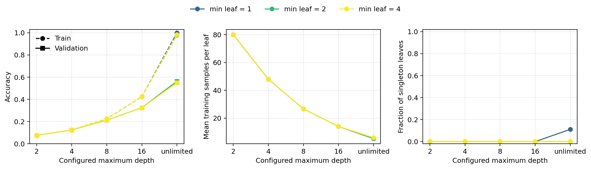
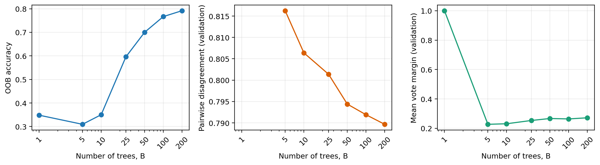
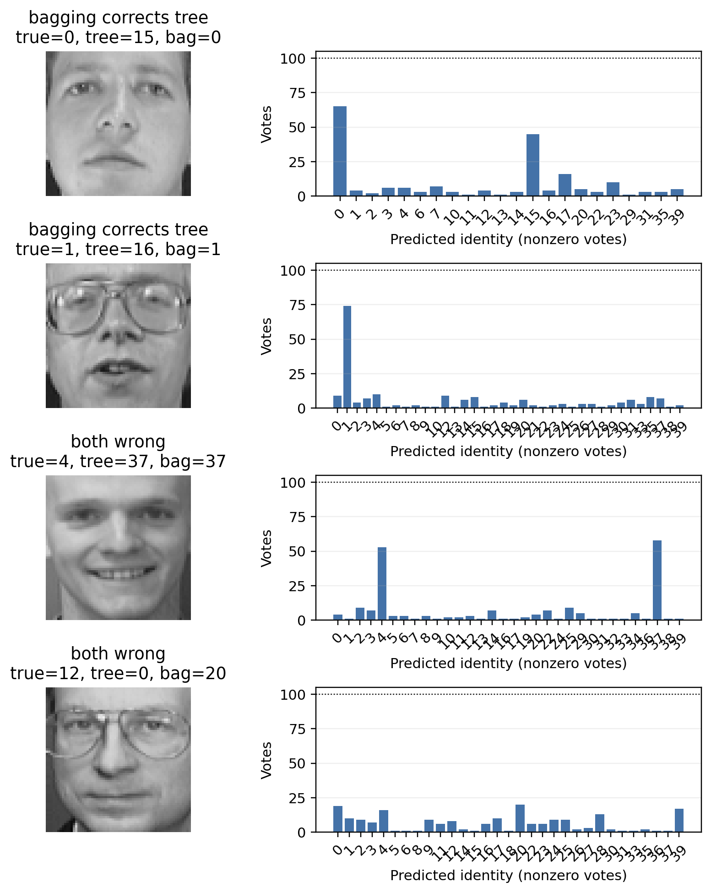
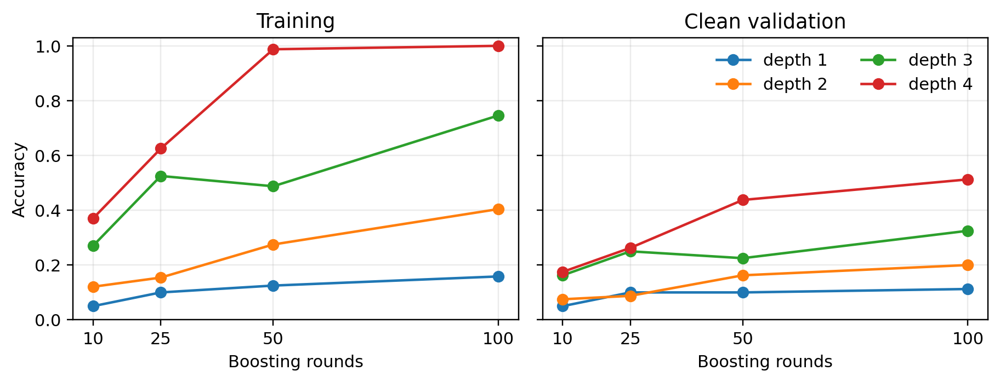
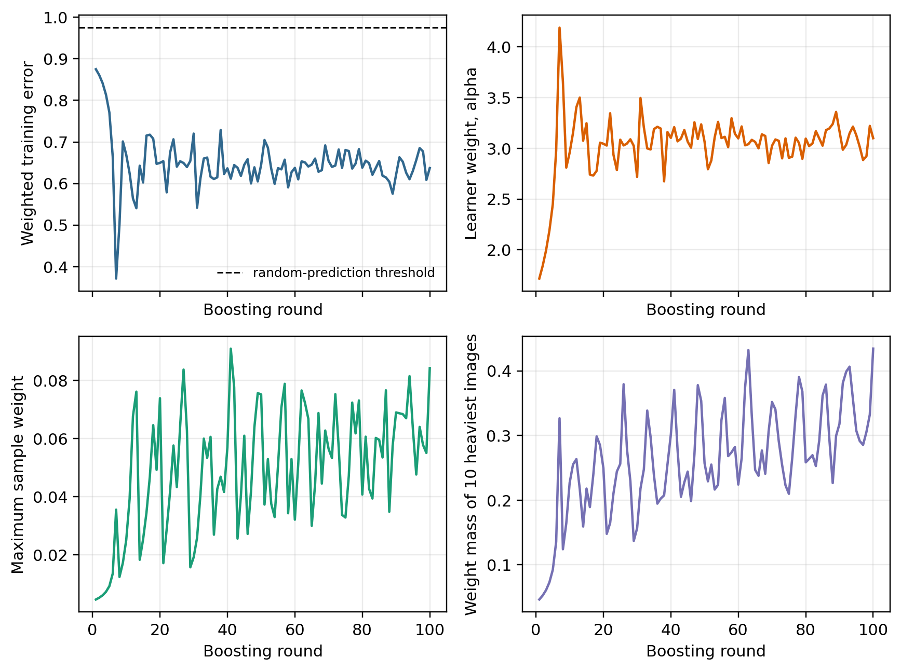
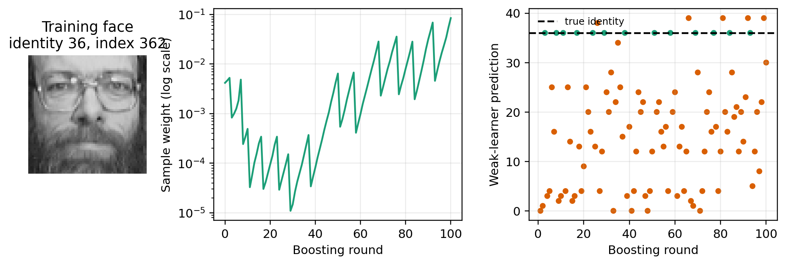
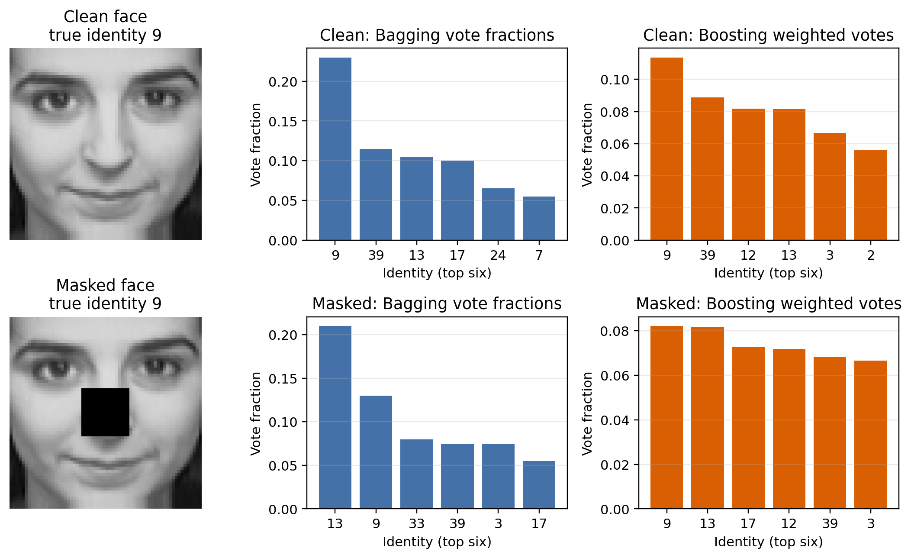
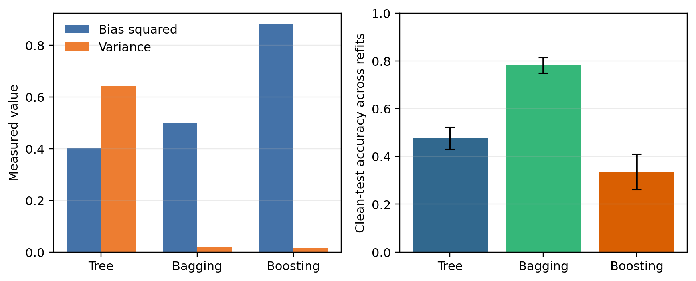
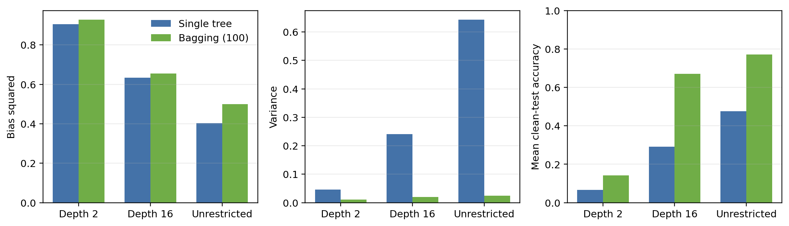
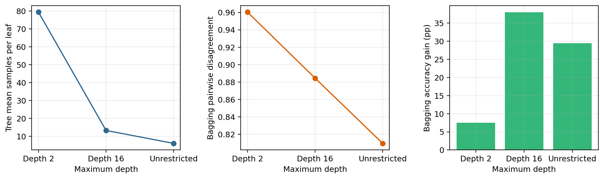

The Olivetti data contain ten 64×64 grayscale images for each of 40 identities [1]. I used the 4096 raw pixels directly. The numeric part of the roll number gives seed 242003. Within every identity I drew a deterministic 6/2/2 train/validation/test split, giving 240, 80 and 80 images. The saved split digest begins 5f1c58f7.
Hyperparameters were selected only by clean validation accuracy. The clean and masked test sets were not used for selection. The masked set is a copy of the fixed test set with rows and columns 24–39 set to zero. Training always uses clean faces.
I used scikit-learn only for individual DecisionTreeClassifier models [4]. Bootstrap sampling, hard voting, out-of-bag accounting and SAMME were implemented directly. Smaller bagging ensembles are prefixes of the same 200-tree run, which keeps their comparisons paired.
The grid covered maximum depths 2, 4, 8, 16 and unrestricted, with minimum leaf sizes 1, 2 and 4. Unrestricted trees with leaf sizes 1 and 2 tied at 56.25% validation accuracy. The declared simplicity tie-break selected leaf size 2, eliminating singleton leaves without reducing validation accuracy.
| Model | Train | Val. | Test | Leaves | Mean/leaf | Singleton |
|---|---|---|---|---|---|---|
| Tree (unrestricted, leaf 2) | 97.92 | 56.25 | 57.50 | 45 | 5.33 | 0% |
For leaf size 2, increasing depth from 2 to unrestricted raises the leaf count from 3 to 45 and lowers mean occupancy from 80.00 to 5.33. Training accuracy rises from 7.50% to 97.92%, while validation reaches only 56.25%. This widening gap is the measured cost of increasingly specialised partitions.
Each tree receives 240 bootstrap draws and uses the frozen tree setting. Aggregation follows Breiman's plurality-vote construction [2].
| B | Train | Val. | Test | Distinct |
|---|---|---|---|---|
| 1 | 72.08 | 32.50 | 35.00 | 151.00 |
| 5 | 95.42 | 50.00 | 62.50 | 153.40 |
| 10 | 99.17 | 70.00 | 68.75 | 151.50 |
| 25 | 100.00 | 76.25 | 76.25 | 151.16 |
| 50 | 100.00 | 82.50 | 81.25 | 150.76 |
| 100 | 100.00 | 81.25 | 83.75 | 151.05 |
| 200 | 100.00 | 86.25 | 87.50 | 151.85 |
For sample size n, the expected number of represented cases is n[1−(1−1/n)n]. At n=240 this is 151.893 (63.289%), close to 1−e−1. The measured 200-tree mean is 151.85 (63.271%). Validation accuracy is not monotone—B=50 slightly exceeds B=100—but B=200 is best and was frozen before its test result was used.

| B | OOB acc. | Coverage | Disagree. | Margin |
|---|---|---|---|---|
| 1 | 34.83 | 37.08 | — | 1.0000 |
| 5 | 30.95 | 87.50 | 0.8163 | 0.2275 |
| 10 | 35.02 | 98.75 | 0.8064 | 0.2313 |
| 25 | 59.58 | 100.00 | 0.8014 | 0.2535 |
| 50 | 70.00 | 100.00 | 0.7944 | 0.2670 |
| 100 | 76.67 | 100.00 | 0.7919 | 0.2641 |
| 200 | 79.17 | 100.00 | 0.7897 | 0.2718 |
OOB coverage is only 37.08% at B=1 and reaches 100% by B=25. Thereafter OOB accuracy rises from 59.58% to 79.17%. The validation margin generally increases, but disagreement falls slightly from 0.8163 at B=5 to 0.7897 at B=200. More trees do not create increasing diversity; they average many already diverse, noisy decisions until the leading class becomes more stable.
| Model | Set | Acc. | Confidence |
|---|---|---|---|
| Tree | Clean | 57.50 | 0.9813 |
| Tree | Masked | 33.75 | 1.0000 |
| Bagging (200) | Clean | 87.50 | 0.4079 |
| Bagging (200) | Masked | 70.00 | 0.2974 |
Masking costs the tree 23.75 percentage points and bagging 17.50. The tree's leaf-probability confidence rises to 1.0 while its accuracy collapses: masked images are being routed into pure leaves, not recognised more reliably. Bagging confidence, defined as the winning vote fraction, falls as expected.
For identities 0 and 1 (indices 6 and 10), the tree predicts 15 and 16, while 65 and 74 bagged trees recover the correct classes. These are unstable partition errors. The shared mistakes differ. Identity 4 (index 41) is nearly tied between wrong class 37 (58 votes) and true class 4 (53); identity 12 (index 127) receives only eight correct votes amid a diffuse set of alternatives. Aggregation can remove unstable errors, but not errors shared by most base models.

My scratch implementation follows the SAMME weighted error and class-score construction [3]:
The toy problem has nine one-dimensional samples: three consecutive examples from each of classes 0, 1 and 2. A depth-1 tree predicts [0,0,0,1,1,1,1,1,1]. With initial weights 1/9, the last three samples are wrong, so ε=1/3 and α=log(4)=1.386294. The update is wi←wiexp(α1[wrong]).
| Samples | True | Pred. | Initial | Wrong | Unnorm. | Final |
|---|---|---|---|---|---|---|
| 0–2 | 0 | 0 | 1/9 | No | 1/9 | 1/18 |
| 3–5 | 1 | 1 | 1/9 | No | 1/9 | 1/18 |
| 6–8 | 2 | 1 | 1/9 | Yes | 4/9 | 2/9 |
The unnormalised weights sum to 2. The face code calls this same update. A learner is accepted only when ε<1−1/K; an invalid learner is logged and training stops. Zero error uses a numerical floor for finite α and then stops. Tests cover both cases, and no learner was rejected in the official run.
The following matrix gives validation accuracy (%) for each depth/round pair. Selection used no test values.
| Depth \ rounds | 10 | 25 | 50 | 100 |
|---|---|---|---|---|
| 1 | 5.00 | 10.00 | 10.00 | 11.25 |
| 2 | 7.50 | 8.75 | 16.25 | 20.00 |
| 3 | 16.25 | 25.00 | 22.50 | 32.50 |
| 4 | 17.50 | 26.25 | 43.75 | 51.25 |
Depth 4 with 100 rounds was best and therefore frozen. It reaches 100% training accuracy but only 51.25% validation accuracy. By contrast, 100 depth-1 learners reach 15.83% training accuracy, so very shallow partitions underfit this 40-class problem.


Across the selected run, weighted errors range from 0.3714 to 0.8750, always below the 39/40 random threshold. Learner weights range from 1.7177 to 4.1897. The maximum individual sample weight reaches 0.0910 at round 41, and the ten heaviest training faces carry 0.4344 of the mass at round 100. The model increasingly concentrates on a small difficult subset.

| Learners | Model | Train | Val. | Test | Fit time (s) |
|---|---|---|---|---|---|
| 25 | Bag. | 100.00 | 76.25 | 76.25 | 23.04 |
| 25 | Boost | 62.50 | 26.25 | 26.25 | 7.12 |
| 50 | Bag. | 100.00 | 82.50 | 81.25 | 45.33 |
| 50 | Boost | 98.75 | 43.75 | 43.75 | 14.44 |
| 100 | Bag. | 100.00 | 81.25 | 83.75 | 90.93 |
| 100 | Boost | 100.00 | 51.25 | 52.50 | 28.80 |
Times cover only base-learner fitting on the same machine. Boosting is about three times faster because its trees stop at depth 4, whereas bagging uses unrestricted trees. At 100 learners, however, bagging is 31.25 points more accurate on the clean test.
Index 362 is misclassified in 87 of 100 rounds and finishes with weight 0.08428. Mistakes in rounds 89–92 raise it from 0.01170 to 0.06846; a correct round 93 prediction lowers it to 0.00458, then seven more mistakes return it to 0.08428. The wrong labels vary, indicating that successive shallow partitions rarely isolate this face rather than confusing it with one fixed identity.
| Model | Clean acc. | Conf. | Masked acc. | Conf. |
|---|---|---|---|---|
| Tree | 57.50 | 0.9813 | 33.75 | 1.0000 |
| Bagging | 87.50 | 0.4079 | 70.00 | 0.2974 |
| Boosting | 52.50 | 0.1207 | 53.75 | 0.1143 |
Boosting gains one correct prediction after masking, but its mean winning vote falls. I treat the 1.25-point increase as split-specific label flips, not evidence that removing information helps.

For this face, clean bagging gives identity 9 46/200 votes. After masking, 44.5% of trees change prediction; disagreement rises from 0.9022 to 0.9132 and class 13 wins 42 votes against 26 for class 9. The winning margin falls from 0.115 to 0.080.
Only 15% of boosting learners change label, carrying 15.64% of total α. Its correct class-9 weighted vote falls from 0.11363 to 0.08207, barely above class 13 at 0.08152—a margin of 0.00055. The sequentially trained depth-4 learners react more consistently than the independently bootstrapped deep trees for this face, but the near tie is fragile rather than confident.
I kept the 80 clean test faces fixed and generated 30 training sets. Within each identity, six draws with replacement came only from that identity's original six training faces. Every selected model was refitted without retuning.
For each test face I saved a 40-class vector: leaf probabilities for a tree, vote fractions for bagging, and normalised α-weighted votes for boosting. For target one-hot vector ei, prediction pr(xi) and repetition mean p(xi), I computed
Every saved vector was checked to have class order 0–39 and unit sum. Accuracy standard deviations use ddof=1; bias and variance use the population denominators above.
| Model | Bias² | Variance | Mean acc. | SD |
|---|---|---|---|---|
| Tree | 0.40394 | 0.64272 | 47.67 | 4.59 |
| Bagging (200) | 0.49887 | 0.02062 | 78.29 | 3.26 |
| Boosting (100) | 0.88015 | 0.01587 | 33.63 | 7.47 |
The unrestricted tree has the smallest bias but by far the largest variance. Bagging raises bias moderately and reduces variance by 96.79% relative to the selected single tree when using 200 trees. Boosting is the most stable in the vector sense, yet its high bias leaves it least accurate on average. Bias and variance use the whole class vector, so neither is identical to classification error.

Validation had selected an unrestricted tree, so no finite limit can be “deeper” than the selected setting. I therefore predeclared depth 2 as shallow, depth 16 as a much deeper finite contrast, and retained the selected unrestricted model as the deepest setting. All use minimum leaf size 2; the paired bagged ensembles use 100 trees.
| Depth | Model | Bias² | Variance | Acc. | Var. removed |
|---|---|---|---|---|---|
| 2 | Tree | 0.90476 | 0.04633 | 6.71 | — |
| 2 | Bag. | 0.92765 | 0.01063 | 14.21 | 77.05% |
| 16 | Tree | 0.63420 | 0.24113 | 29.17 | — |
| 16 | Bag. | 0.65462 | 0.01987 | 67.12 | 91.76% |
| None | Tree | 0.40394 | 0.64272 | 47.67 | — |
| None | Bag. | 0.49893 | 0.02450 | 77.12 | 96.19% |
Increasing depth lowers single-tree bias and sharply raises variance. Bagging removes 0.03570, 0.22126 and 0.61822 variance units at depths 2, 16 and unrestricted. The small accompanying increase in bias is outweighed by variance removal for the deeper settings.


No. Bagging improves accuracy by 7.50 points at depth 2, 37.96 at depth 16, and 29.46 for unrestricted trees. The deepest trees show the largest variance reduction, but not the largest accuracy gain.
A depth-2 tree has 3.03 leaves and 79.33 training cases per leaf on average. Its bias is 0.90476. Disagreement is high (0.9604), but it represents diversity among crude, mostly wrong partitions; the bagged model reaches only 14.21%.
At depth 16, a tree averages 18.27 leaves and 13.23 cases per leaf. Bias has fallen to 0.63420, while variance 0.24113 leaves enough instability to average away. Disagreement remains high at 0.8844, and bagging reaches 67.12%. This balance produces the largest gain.
Unrestricted trees average depth 34.9, 40 leaves and six cases per leaf. Their lower bias (0.40394) and higher starting accuracy leave less headroom. Bagging removes 96.19% of variance, but bias rises to 0.49893 and disagreement is lower at 0.8094. Variance removal and discrete accuracy improvement are therefore related but not interchangeable.
| Model | Clean | Masked | Δ | Bias² | Var. |
|---|---|---|---|---|---|
| Tree | 57.50 | 33.75 | −23.75 | 0.40394 | 0.64272 |
| Bagging | 87.50 | 70.00 | −17.50 | 0.49887 | 0.02062 |
| Boosting | 52.50 | 53.75 | +1.25 | 0.88015 | 0.01587 |
The frozen tree is most sensitive to missing pixels and most sensitive to resampled training data. Bagging is the best recogniser on both test sets and remains stable across refits. Boosting has the lowest variance and smallest observed mask change, but also the highest bias. Its one-image masked gain accompanies lower winning confidence, so it is not evidence of genuine robustness.
The experiments separate three ideas that can look similar in a single accuracy number. First, deep trees are expressive but unstable: their class vectors vary sharply when a few training faces are duplicated or omitted. Second, bagging works well here because these unstable trees make sufficiently different errors, and plurality voting preserves useful identity detail while removing much of the variability. Third, boosting's sequential focus is reproducible, but the depth-4 learners retain a strong systematic error on this 40-class task. Low variance cannot compensate for that bias.
The repository contains the saved split, roll-number seed, frozen JSON configurations, scratch bagging and boosting code, raw CSV tables, run logs, plotting code, figures and exact commands. Versions are pinned in requirements.txt. The official environment used Python 3.13.7, NumPy 2.2.6 and scikit-learn 1.7.2.
Three independent verification programs check selection rules, vector normalisation, OOB conventions, SAMME updates, saved case votes and the Q3 bias–variance formulas. The Q3 verifier also checks all 30 resamples, eight arrays of shape (30,80,40), per-repetition checkpoints and the identity-wise sampling rule. The complete unit-test suite contains 12 passing tests.
The 30-refit Q3 run used deterministic child seeds and took 1740.85 s with ten parallel jobs. Its resample digest begins 956e0203 and protocol digest begins 1de73ca9. These identifiers prevent cached checkpoints from being mixed across protocols.
All conclusions are conditional on one roll-number split and an 80-image test set. A 1.25-point accuracy change is one image, so small clean/masked differences should not be overinterpreted. Timing comparisons are specific to this machine and to the measured fitting boundary. Finally, the Q3 resampling distribution is centred on the six observed training faces per identity; it measures training-sample sensitivity within this assignment protocol, not population-wide facial variation.
On this split, the selected 200-tree bagged classifier gives the best balance of accuracy, stability and missing-region tolerance. Its clean accuracy is 30 points above the single tree and 35 points above selected boosting. Measured variance confirms that aggregation stabilises deep trees, while the depth study shows why the largest variance reduction need not produce the largest accuracy gain. Boosting supplies the counterexample needed for the final comparison: it has the lowest variance, yet high bias keeps its accuracy below bagging.
[1] F. Samaria and A. Harter. “Parameterisation of a stochastic model for human face identification.” In Proc. 2nd IEEE Workshop on Applications of Computer Vision, pages 138–142, 1994. doi:10.1109/ACV.1994.341300.
[2] L. Breiman. “Bagging predictors.” Machine Learning, 24(2):123–140, 1996. doi:10.1007/BF00058655.
[3] J. Zhu, H. Zou, S. Rosset, and T. Hastie. “Multi-class AdaBoost.” Statistics and Its Interface, 2(3):349–360, 2009. doi:10.4310/SII.2009.v2.n3.a8.
[4] F. Pedregosa et al. “Scikit-learn: Machine learning in Python.” Journal of Machine Learning Research, 12(85):2825–2830, 2011.
| Claim | Primary saved evidence |
|---|---|
| Split and seed | shared/config.json, split_indices.npz |
| Q1 selection/diagnostics | question_1/outputs/ |
| SAMME histories | question_2/outputs/ |
| Bias–variance vectors | q3_prediction_vectors.npz |
| Full verification | verify_question_*.py |
Percentages in tables are rounded to two decimal places and bias/variance values to five decimals. Full-precision values remain in the saved CSV and JSON artifacts. No displayed metric was transcribed from an unsaved run.